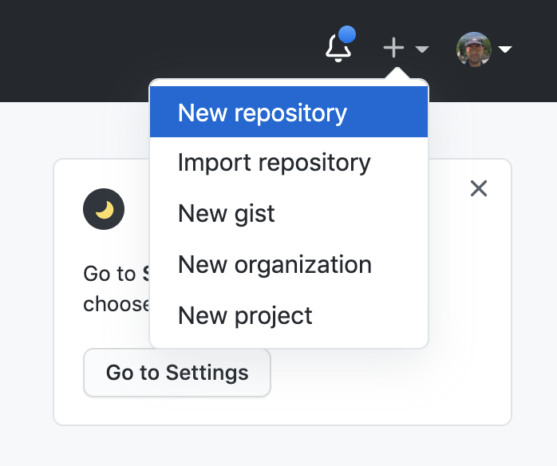
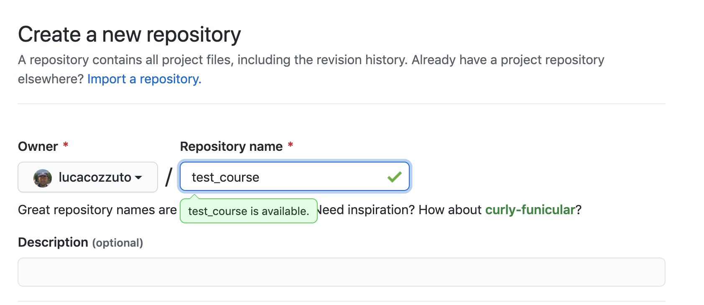
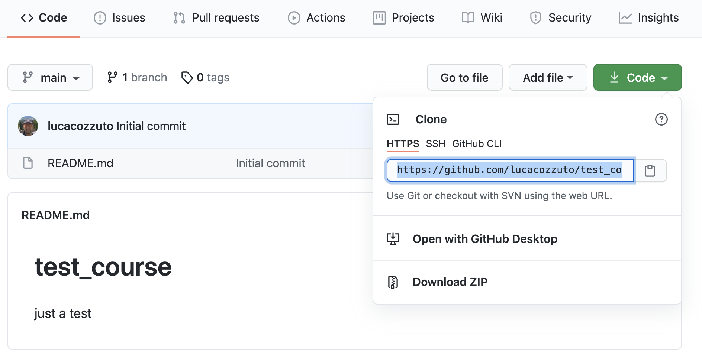

6.12 Share Nextflow pipelines and good practices
Nextflow supports a number of code sharing platforms: BitBucket, GitHub, and GitLab. This feature allows you to run pipelines by just pointing to an online repository without caring about downloading etc. The default platform is GitHub, so we will use this repository as an example.
Let’s create a new repository with a unique name:


And then let’s clone it in one of our test folder. Let’s choose the 5. We can get the url path by clicking like on the figure:

git clone https://github.com/lucacozzuto/test_course.git
Cloning into 'test_course'...
remote: Enumerating objects: 3, done.
remote: Counting objects: 100% (3/3), done.
remote: Total 3 (delta 0), reused 0 (delta 0), pack-reused 0
Unpacking objects: 100% (3/3), done.So now we have an almost empty folder named test_course. We can just move or copy our files there:
cp *.* lib -r test_course/
cd test_course
git status
# On branch main
# Untracked files:
# (use "git add <file>..." to include in what will be committed)
#
# lib/
# nextflow.config
# params.config
# test5.nf
nothing added to commit but untracked files present (use "git add" to track)Now we are ready for committing and pushing everything to the online repository. But before we need to rename test5.nf to main.nf.
mv test5.nf main.nf
git add *
git status
# On branch main
# Changes to be committed:
# (use "git reset HEAD <file>..." to unstage)
#
# new file: lib/bowtie.nf
# new file: lib/fastqc.nf
# new file: lib/multiqc.nf
# new file: nextflow.config
# new file: params.config
# new file: main.nf
#
git commit -m "first commit"
[main 7681f85] first commit
6 files changed, 186 insertions(+)
create mode 100644 lib/bowtie.nf
create mode 100644 lib/fastqc.nf
create mode 100644 lib/multiqc.nf
create mode 100644 nextflow.config
create mode 100644 params.config
create mode 100755 main.nf
[lcozzuto@nextflow test_course]$ git push
Username for 'https://github.com': ######
Password for 'https://######@github.com':
Counting objects: 10, done.
Delta compression using up to 8 threads.
Compressing objects: 100% (7/7), done.
Writing objects: 100% (9/9), 2.62 KiB | 0 bytes/s, done.
Total 9 (delta 0), reused 0 (delta 0)
To https://github.com/lucacozzuto/test_course.git
bbd6a44..7681f85 main -> mainSo if we go again on the GitHub website we can see that eveything has been uploaded.
Now we can remove that folder and go in the home folder.
And we can launch directly this pipeline by typing
nextflow run lucacozzuto/test_course -with-docker -r main \
--reads "/home/ec2-user/git/CoursesCRG_Containers_Nextflow_May_2021/nextflow/nextflow/testdata/*.fastq.gz" \
--reference "/home/ec2-user/git/CoursesCRG_Containers_Nextflow_May_2021/nextflow/nextflow/testdata/chr19.fasta.gz"As you can see we just use the repository name and two nextflow parameters: - -with-docker, for using Docker - -r, for using a specific branch. In this case the main branch. Then we pass to the pipelines the path of our input files: - –reads - –reference
N E X T F L O W ~ version 20.10.0
Pulling lucacozzuto/test_course ...
downloaded from https://github.com/lucacozzuto/test_course.git
Launching `lucacozzuto/test_course` [voluminous_feynman] - revision: 95d1028adf [main]
BIOCORE@CRG - N F TESTPIPE ~ version 1.0
=============================================
reads : /home/ec2-user/git/CoursesCRG_Containers_Nextflow_May_2021/nextflow/nextflow/testdata/*.fastq.gz
reference : /home/ec2-user/git/CoursesCRG_Containers_Nextflow_May_2021/nextflow/nextflow/testdata/chr19.fasta.gz
executor > local (5)
[5b/4a36e8] process > fastqc (B7_input_s_chr19.fastq.gz) [100%] 2 of 2 ✔
[5c/644577] process > BOWTIE:bowtieIdx (chr19.fasta.gz) [100%] 1 of 1 ✔
executor > local (5)
[5b/4a36e8] process > fastqc (B7_input_s_chr19.fastq.gz) [100%] 2 of 2 ✔
[5c/644577] process > BOWTIE:bowtieIdx (chr19.fasta.gz) [100%] 1 of 1 ✔
[4b/dad392] process > BOWTIE:bowtieAln (B7_input_s_chr19.fastq.gz) [100%] 2 of 2 ✔
/home/ec2-user/work/d1/11fe0bff99f424571033347bf4b042/B7_H3K4me1_s_chr19.fastq.gz.sam
/home/ec2-user/work/4b/dad392b12d2f78f976d2a890ebcaea/B7_input_s_chr19.fastq.gz.sam
Completed at: 27-Apr-2021 20:27:14
Duration : 1m 26s
CPU hours : (a few seconds)
Succeeded : 5As you can see as first step, Nextflow pulls down the required version of the pipeline and it stores it at:
then it pulls the docker image and run the pipeline.
You can use the Nextflow’s command list that show you the number of pipelines installed in your environment and the command info for fetching some useful information.
nextflow info lucacozzuto/test_course
project name: lucacozzuto/test_course
repository : https://github.com/lucacozzuto/test_course
local path : /home/ec2-user/.nextflow/assets/lucacozzuto/test_course
main script : main.nf
revision : * mainFinally you can update, view or delete a project by using the Nextflow commands pull, view and drop.
nextflow view lucacozzuto/test_course
== content of file: /users/bi/lcozzuto/.nextflow/assets/lucacozzuto/test_course/main.nf
#!/usr/bin/env nextflow
/*
* Copyright (c) 2013-2020, Centre for Genomic Regulation (CRG).
*
* This file is part of 'CRG_Containers_NextFlow'.
*
* CRG_Containers_NextFlow is free software: you can redistribute it and/or modify
* it under the terms of the GNU General Public License as published by
* the Free Software Foundation, either version 3 of the License, or
* (at your option) any later version.
*
* CRG_Containers_NextFlow is distributed in the hope that it will be useful,
[...]